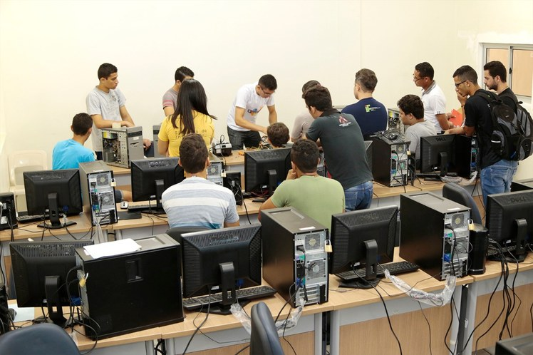
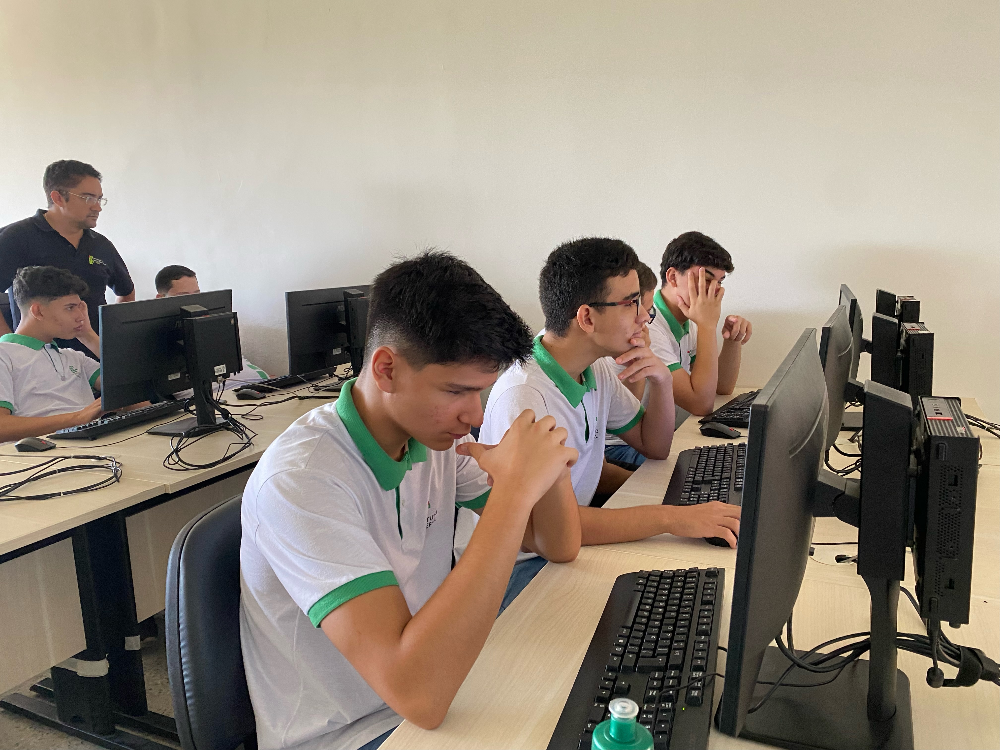
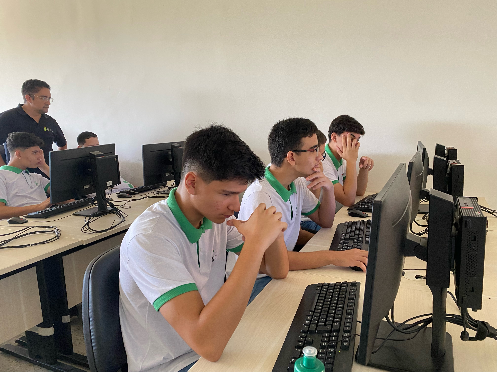
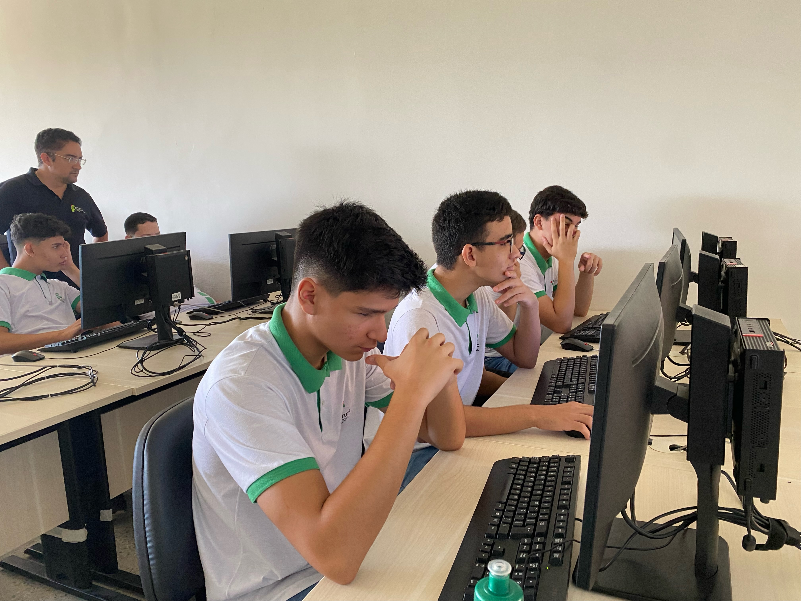

O curso de Informática para internet é o processo de criação de sites e o de desenvolvimento de programas que podem ser utilizados em páginas na internet. Para programar, o aluno vai estudar raciocínio lógico e linguagens de programação, que utiliza comandos para desenvolver funcionalidades e dar forma a um site.
Porque fazer Informática ? Como vou trabalhar ?
A área da t.i está em alta nós últimos anos, e essa área se refere a uma série de soluções e atividades tecnológicas, que envolvem banco de dados, hardwares, softwares e redes (doméstica ou empresarial), usadas para lidar com as informações. Tendo uma faixa salarial de R$ 10.750 a R$ 18.050
O que se pode aprender:
- Elaborar projetos de aplicações para web
- Desenvolver serviços web, algoritmos e aplicações para websites
- Codificar front-end e back-end de aplicações web
- Estruturar e implementar diagramas de banco de dados
- Organizar o processo de trabalho no desenvolvimento de aplicações
- Criar interface gráfica para dispositivos móveis
- Codificar aplicações para dispositivos mobiles
- Codificar acesso à web services e recursos de sistemas móveis
- Publicar e testar aplicações web e para dispositivos móveis
- Realizar manutenção de aplicações web
- Documentar etapas de desenvolvimento de software
- Aplicar comandos da linguagem SQL

 

